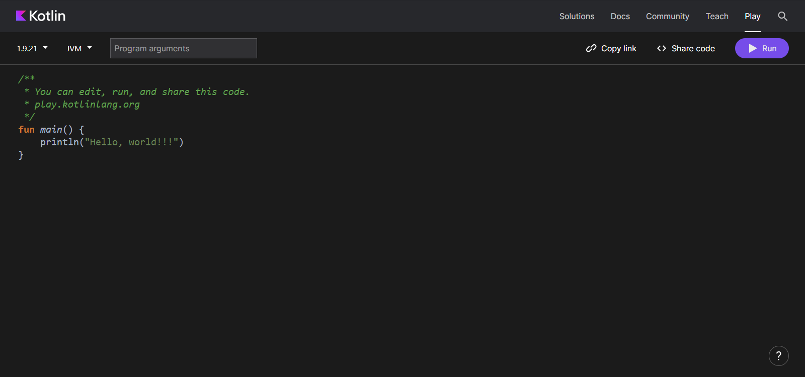
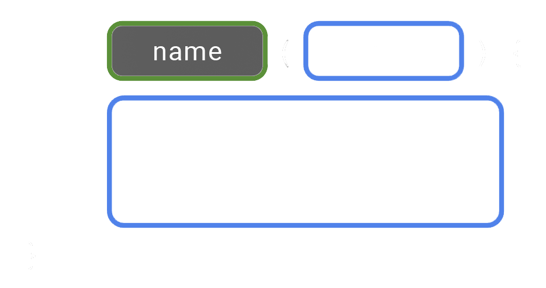
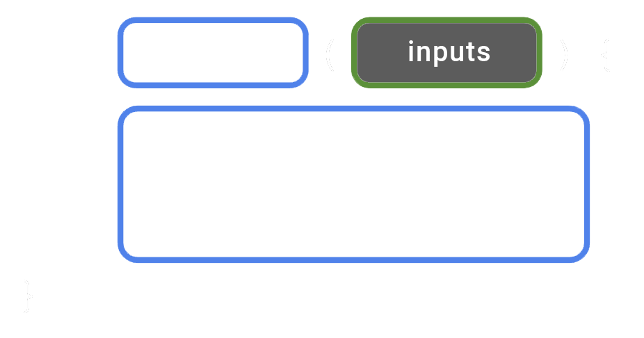
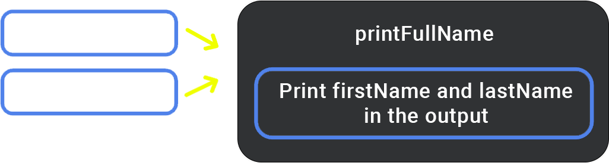
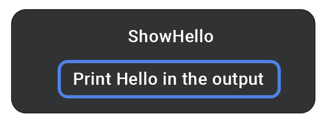
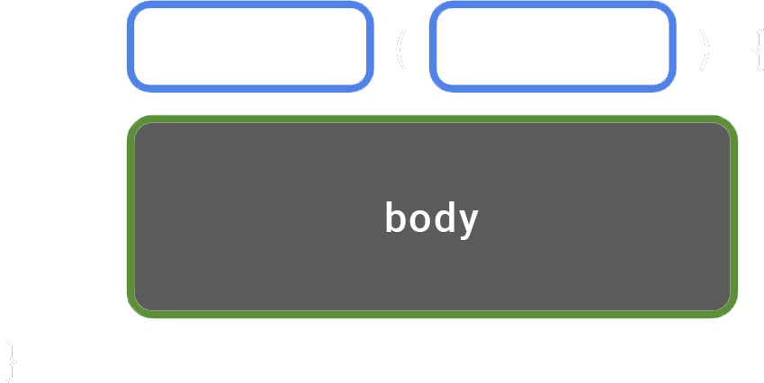
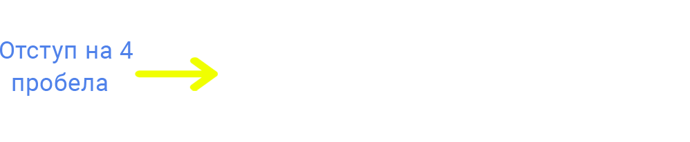
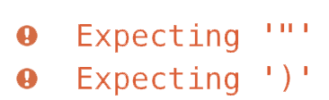

Начало
Начало
 Зайдите на Kotlinlang.
Зайдите на Kotlinlang.
 Выполните свой первый код.
Выполните свой первый код.
 Элементы функции
Элементы функции
 Кotlin: Рекомендации по Стилю
Кotlin: Рекомендации по Стилю
 Исправьте ошибки в коде.
Исправьте ошибки в коде.
 Практика
Практика
 Ответы
Ответы
Прежде чем вы приступите
В этом курсе вы научитесь создавать приложения для Android, используя язык программирования Kotlin, рекомендованный Google. Kotlin - это современный язык программирования, который повышает продуктивность разработчиков. С его помощью можно писать более краткий код для реализации той же функциональности по сравнению с другими языками программирования. Приложения, разработанные на Kotlin, обладают большей стабильностью, что делает их более устойчивыми и удобными для пользователей. Курс начинается с укладки прочных основ программирования на Kotlin. Вы ознакомитесь с основами языка, используя практические занятия (codelabs) из этого руководства, прежде чем приступить к созданию приложений.
Курс начинается с укладки прочных основ программирования на Kotlin. Вы ознакомитесь с
основами языка, используя практические занятия (codelabs) из этого руководства, прежде чем
приступить к созданию приложений.
Что вы будете делать:
- Написание коротких программ на Kotlin, отображающих сообщения при запуске.
Что вы узнаете:
- Как написать и запустить простую программу на Kotlin.
- Как модифицировать программу для изменения выходных данных.
Начало
В этой лаборатории по кодированию вы изучаете и модифицируете простые программы на языке
Kotlin. Программу можно представить как набор инструкций для компьютера или мобильного
устройства, указывающих, что нужно сделать, например, отправить сообщение пользователю
или
рассчитать стоимость товаров в корзине покупок. Шаг за шагом, инструкции о том, что
компьютер должен выполнять, называются кодом. Изменяя код в программе, вы можете влиять
на
её результат.
Для написания и редактирования кода вы используете инструмент под названием "редактор
кода".
Это похоже на текстовый редактор, но с функциональностью для более точного написания
кода,
такой как автозаполнение и отображение ошибок.
Для практики основ языка Kotlin вы будете использовать интерактивный редактор кода,
известный как Kotlinlang.
Этот
редактор доступен через веб-браузер, поэтому у вас нет
необходимости устанавливать дополнительное программное обеспечение на свой компьютер. В
Kotlinlang вы можете напрямую редактировать и запускать код Kotlin, видя результат.
Важно отметить, что в Kotlinlang нельзя создавать приложения для Android. Для этого
вы впоследствии будете использовать Android Studio, другой инструмент, предназначенный
для
написания и редактирования кода вашего приложения для Android.
Зайдите на игровую платформу Kotlinlang.
Откройте игровую платформу Kotlinlang в веб-браузере на своем компьютере. Вас должна встретить веб-страница, аналогичная представленному изображению:
В редакторе кода уже имеется несколько строк кода, которые представляют собой базовую программу.
fun main() {
println("Hello, world!")
}
Можете ли вы, даже не имея опыта в программировании, догадаться, что делает программа?
Запустите свою первую программу
Для запуска вашей программы, просто нажмите на кнопку .
При нажатии "Run" происходит много действий. Язык программирования Kotlin создан
для удобства людей, чтобы они могли легко читать, писать и сотрудничать в коде. Но
компьютеру нужно время, чтобы понять этот язык.
Вам требуется инструмент, известный как компилятор Kotlin. Этот инструмент анализирует
ваш код на языке Kotlin построчно и преобразует его в формат, понятный компьютеру. Этот
процесс называется компиляцией вашего кода.
После успешной компиляции вашего кода программа будет запущена, то есть произойдет ее
выполнение или экзекуция. В момент выполнения программы компьютер последовательно
выполняет каждую из ваших инструкций. Это можно сравнить с выполнением шагов при
следовании кулинарному рецепту, где каждый шаг считается инструкцией.
При запуске вашей программы вы должны увидеть следующий экран.
Внизу редактора кода вы обнаружите панель, отображающую результат выполнения вашей программы.
Hello, world!
Отлично! Главная задача этой программы заключается в выводе или отображении сообщения, содержащего приветствие Hello, world!
Внимание: Если вы не увидели результат, скопируйте три строки кода из предыдущего раздела в Kotlinlang и повторите попытку.
Как это устроено? В программе на Kotlin необходимо определить основную функцию, которая представляет собой конкретное место в вашем коде, с которого начинается выполнение программы. Основная функция является точкой входа или отправной точкой программы.

Теперь вам может быть интересно, что такое функция?
Элементы функции
Функция в программировании представляет собой часть кода, которая занимается выполнением
определенной задачи. В вашей программе может быть одна или даже несколько таких
функций.
Простыми словами Функция - это как отдельная команда, которая
делает что-то определенное. Когда ты пишешь программу, у тебя может быть одна или даже
несколько таких "команд".
Определять, а не вызывать функцию
Сначала в вашем коде вы определяете функцию. Это означает, что вы указываете все шаги,
необходимые для выполнения определенной задачи.
Когда функция определена, вы можете вызывать её, чтобы выполнить инструкции внутри неё.
Давайте представим это на примере. Вы создаёте пошаговые инструкции о том, как испечь
шоколадный торт. Этот набор инструкций получает название: bakeChocolateCake. Каждый раз,
когда вам нужно испечь торт, вы просто вызываете инструкции из bakeChocolateCake. Если
вам нужно испечь 3 торта, просто вызывайте инструкции из bakeChocolateCake трижды.
Первый этап - это определение шагов и присвоение им названия, что фактически
является
определением функции. Затем вы можете обращаться к этим шагам в любое время, когда вам
нужно, чтобы они выполнялись, что считается вызовом функции.
"Объявление функции" — это альтернативное выражение, которое может заменять фразу "определение функции". Слова "declare" и "define" часто используются как синонимы, обозначая процесс создания функции в коде. Также распространены термины "определение функции" и "объявление функции", которые указывают на конкретный участок кода, где функция определена. Важно отметить, что в некоторых других языках программирования термины "declare" и "define" могут нести различные значения.
Определите функцию
- Имя функции: Это нужно для того, чтобы можно было вызвать функцию позже.
- Входные данные: Иногда функция требует определенные данные или информацию при её вызове. Эти данные помогают функции достигнуть своей цели. Ввод может быть необязательным, и некоторые функции могут обходиться без ввода.
- Тело функции: Это часть функции, содержащая инструкции, необходимые для выполнения задачи.
Для преобразования указанной диаграммы в код Kotlin следуйте следующему синтаксису. Соблюдение порядка размещения этих элементов важно. Начните с использования ключевого слова "fun", затем укажите название функции, после чего укажите параметры в круглых скобках. Завершите объявление функции фигурными скобками, внутри которых будет тело функции.
fun название_функции(вводные_данные) {
// Тело функции
}
Посмотрите на основные части примера функции в главной функции, который вы видели на игровой площадке Kotlinlang:
- Определение функции начинается со слова fun.
- Затем идет название функции, в данном случае - main.
- Поскольку у функции нет входных данных, круглые скобки остаются пустыми.
- В теле функции есть всего одна строка кода: println("Hello, world!"), которая расположена между фигурными скобками функции.
Ключевое слово Function
Чтобы в Kotlin объявить функцию, используйте ключевое слово "fun" (сокращение от
"function"). Напишите его с маленькой буквы в новой строке. Важно использовать именно
"fun", а не какие-то другие варианты, такие как "func" или "функцию", так как компилятор
Kotlin не поймет ваше намерение.
Эти ключевые слова в Kotlin называются ключевыми
словами и зарезервированы для определенных задач, таких как создание новых функций.
Наименование функции
Функции имеют свои собственные имена, чтобы их легко можно было различить друг от друга, аналогично тому, как люди используют имена для того, чтобы определить себя. Имя функции указывается после ключевого слова "fun".
Выберите подходящее название для вашей функции, исходя из того, что она делает. Обычно это название представляет собой глагол или глагольную фразу. Постарайтесь не использовать ключевое слово Kotlin в качестве имени функции. Это поможет сделать ваш код более понятным для других программистов, особенно для тех, кто только начинает изучать Kotlin.
Выбирайте имена для своих функций в соответствии с соглашением о верблюжьем регистре. Это означает, что первое слово в имени функции должно быть написано маленькими буквами. Если в названии несколько слов, то между ними не ставятся пробелы, а каждое последующее слово начинается с заглавной буквы.
Например:
- calculateTip
- saveToFile
- searchForItem
Ключевое слово Function
Обратите внимание, что после названия функции всегда идут круглые скобки. Внутри этих скобок указываются входные данные, которые передаются функции.

Входные данные - это часть данных, которые функция использует для выполнения своей
задачи. Когда вы создаете функцию, вы можете указать, какие данные ей нужны при её
вызове. Если функции не нужны данные, то в круглых скобках просто ничего не указывается
().
Вот несколько примеров функций с разным количеством входных данных:
На этой картинке показана функция с именем addOne. Её цель - увеличить заданное число на
1. У неё есть один вход - это число, которое мы передаём ей. Внутри функции есть код,
который увеличивает переданное число на 1.
В этом примере у нас есть функция с именем printFullName. Она принимает два входных значения: одно для имени, другое для фамилии. Внутри функции есть код, который выводит на экран полное имя пользователя, объединяя имя и фамилию.
В этом последнем примере мы видим функцию, которая не требует получения каких-либо данных, когда ее вызывают. Если вы вызовете функцию ShowHello( ), она просто выведет приветственное сообщение.
Тело функции
Тело функции - это место, где содержатся команды, которые нужны для выполнения цели функции. Чтобы найти тело функции в коде, просто поищите строки между открывающей и закрывающей фигурными скобками.
Краткое описание программы
Вспомните простую программу, которую вы видели ранее
Программа включает в себя всего одну функцию, которая называется "main" - это особенное
имя функции в языке программирования Kotlin. Когда вы создаете свой код в Kotlin
Playground, весь код должен быть написан внутри функции main() или вызван из нее.
Внутри тела функции main() находится всего одна строка кода:
println("Hello, world!")
Эта строка кода - это инструкция, которая выполняет определенное действие. В данном
случае, она говорит программе напечатать текст "Hello, world!" в области вывода. Мы
используем функцию println(), которая уже встроена в язык программирования Kotlin.
Программисты, создавшие Kotlin, предварительно определили, как эта функция должна
работать.
Для использования println() просто напишите ее имя, а затем в круглых скобках укажите
текст сообщения, который вы хотите вывести. Важно помнить о том, чтобы использовать
кавычки вокруг текста, например: "Hello, world!".
Когда программа запускается, текст сообщения, переданный в функцию println(),
отображается в выходной области программы:
Hello, world!
Попробуйте
Давайте вернемся к исходному коду в программе. Могли бы вы изменить код в Kotlin Playground так, чтобы после выполнения выводилось указанное сообщение?
Hello, Android!
Измените свою программу
Если вы хотите изменить текст, который будет выведен в консоли, отредактируйте строку кода с вызовом функции println() на второй строке программы. Замените слово "world" на "Android" внутри скобок println(). Убедитесь, что фраза "Hello, Android!" остается заключенной в кавычки и скобки остаются круглыми.
fun main() {
println("Hello, Android!")
}
2. Запустите программу.
3. После запуска появится следующее сообщение:
Hello, Android!
Отличная работа! Вы только что внесли изменения в свою первую программу!
Теперь давайте попробуем сделать так, чтобы сообщение выводилось дважды. Взгляните на
пример результата, который мы хотим получить:
Hello, Android! Hello, Android!
Напечатайте несколько сообщений
Вы можете поместить в функцию столько строк инструкций, сколько вам нужно для выполнения
задачи. Однако обратите внимание, что в Kotlin должно быть только по одному оператору на
строку. Если вы хотите написать еще одно заявление, поместите его в новую строку
функции.
Как адаптировать вашу программу для вывода нескольких строк текста:
1. Возьмите строку кода с командой println() и переместите её под другую строку с такой же командой внутри тела вашей функции, которое заключено в фигурные скобки. Теперь у вас внутри функции будет две строки с командой println().
fun main() {
println("Hello, Android!")
println("Hello, Android!")
}
2. Запустите программу.
3. После того, как вы запустили свою программу, ожидайте получение результата.
Hello, Android! Hello, Android!
Вы можете наблюдать, как изменения в программном коде отражаются на конечном результате.
Внесите изменения в код так, чтобы программа выводила сообщение: 'Hello,
ВАШЕ_ИМЯ!".
Кotlin: Рекомендации по Стилю
В течение этого курса мы познакомим вас с основными методами программирования для
разработчиков Android. Один из таких методов - соблюдение стандартов кодирования от
Google для языка Kotlin. Полное руководство называется "руководство по стилю" и поможет
вам понять, как правильно форматировать свой код с точки зрения внешнего вида и
соглашений, которые стоит соблюдать при написании кода.
Это руководство включает в себя рекомендации по использованию пробелов, отступов,
именованию и другим важным аспектам. Следуя ему, вы сделаете свой код более читаемым и
согласованным с кодом других разработчиков Android. Это особенно важно при совместной
работе над большими проектами, чтобы стиль кода был единым во всех файлах проекта.
Вот несколько конкретных рекомендаций из руководства по стилю, связанных с тем, чему вы
уже научились в Kotlin:
1. Названия функций должны быть в регистре camel и представлять собой глаголы или
словосочетания.
2. Каждая инструкция должна находиться в отдельной строке.
3. Открывающая фигурная скобка должна располагаться в конце строки, где начинается
функция.
Перед открывающей фигурной скобкой должен быть пробел.
4. Перед открывающей фигурной скобкой должен быть пробел.
Следуя этим рекомендациям, вы сможете улучшить структуру своего кода и лучше
взаимодействовать с другими разработчиками.
Внутри функции необходимо добавить отступ в 4 пробела. Используйте 4 пробела для форматирования кода, избегая символов табуляции.
Фигурная скобка, закрывающая функцию, размещается на отдельной строке после последней строки кода внутри функции. Важно, чтобы эта закрывающая фигурная скобка совпадала с ключевым словом "fun", которое находится в начале функции.
По мере того, как вы углубляетесь в изучение языка Kotlin, вы будете более подробно разбираться с правилами программирования для Android.
Исправьте ошибки в коде.
Когда вы учитесь программированию, подобно изучению человеческого языка, существуют
правила для правильного написания кода. Эти правила касаются синтаксиса и грамматики
языка программирования, и их соблюдение важно для успешной компиляции кода.
При кодировании часто возникают ошибки и случайные недочеты в коде, особенно для
новичков. Эти проблемы могут быть запутывающими, но не стоит беспокоиться - это
нормальная часть процесса обучения. Как и при написании текста, где требуется несколько
черновиков, написание кода может потребовать нескольких итераций, прежде чем он
заработает правильно.
Если ваш код не компилируется успешно, возникает ошибка. Это может быть вызвано
опечатками, пропущенными кавычками или скобками. Компилятор не сможет понять ваш код и
преобразовать его в инструкции для компьютера. Если код не работает как ожидается или вы
видите сообщение об ошибке, вам нужно вернуться к коду и исправить его. Этот процесс
называется устранением неполадок.
Теперь попробуйте скопировать и вставить следующий фрагмент кода в Kotlin Playground и
запустите программу. Какие результаты вы видите?
fun main() {
println("Today is sunny!)
}
В идеале, когда вы запускаете программу, вы ожидаете увидеть сообщение Today is sunny! на экране. Однако иногда вместо этого на экране появляются странные символы с восклицательным знаком и сообщениями об ошибках.
Сообщение об ошибке от Kotlin Playground
Сообщения об ошибках начинаются со слова "Ожидание", потому что компилятор Kotlin что-то
"ожидает", но не находит этого в коде. В этом случае компилятор ожидает, что код во
второй строке вашей программы будет заключен в закрывающие кавычки и круглые скобки.
Обратите внимание на инструкцию println(). Важно заметить, что текст, который вы хотите
вывести, должен быть заключен в открывающие и закрывающие кавычки. Несмотря на то, что в
коде есть закрывающая скобка, компилятор считает, что она является частью текста для
печати, так как перед ней нет закрывающих кавычек.
Для исправления ошибки добавьте закрывающие кавычки после восклицательного знака перед
закрывающей скобкой в вашем коде:
fun main() {
println("Today is sunny!")
}
После внесения этого изменения, перезапустите программу. Никаких ошибок не должно возникнуть, и на панели вывода должен отобразиться текст:
Today is sunny!
Вы проделали отличную работу по исправлению ошибки! По мере того, как вы будете
приобретать больше опыта в написании кода и устранении ошибок, вы узнаете, насколько
важно обращать внимание на различные детали, такие как заглавные буквы, правописание,
интервалы, символы и названия при вводе кода.
В следующем разделе вы будете работать над серией упражнений, чтобы применить на
практике то, чему вы научились. Решения предоставлены в конце codelab, но сначала
попробуйте найти ответы самостоятельно.
Практика
1. Можете ли вы, не запуская код в Kotlin Playground, прочитать его и предположить, какой результат он выдаст?
fun main() {
println("1")
println("2")
println("3")
}
Как только у вас возникнет предположение, скопируйте этот код и вставьте его в Kotlin Playground, чтобы проверить свои идеи.
2. Используйте игровую площадку Kotlin, чтобы создать программу, которая будет отображать следующие сообщения:
Я Изучаю Kotlin!
3. Скопируйте и вставьте эту программу в Kotlin Playground.
fun main() {
println("Вторник")
println("Четверг")
println("Среда")
println("Пятница")
println("Понедельник")
}
Измените программу так, чтобы она выдавала следующий результат:
Понедельник Вторник Среда Четверг Пятница
Для того чтобы научиться устранять ошибки в программировании, попрактикуйтесь на следующих заданиях. Скопируйте код каждого упражнения в Kotlin Playground в вашем веб-браузере. Запустите программу, и обратите внимание на появившееся сообщение об ошибке. Это поможет вам лучше понять, как находить и исправлять ошибки в коде, особенно если вы новичок.
4. Исправьте ошибку в программе, чтобы она выводила нужный результат.
fun main() {
println("Tomorrow is rainy")
Желаемый результат:
Tomorrow is rainy
5. Исправьте ошибку в этой программе, чтобы она показывала нужный результат.
fun main() {
printLine("There is a chance of snow")
}
Желаемый результат:
There is a chance of snow
6. Исправьте ошибку в этой программе, чтобы она показывала нужный результат.
fun main() {
println("Cloudy") println("Partly Cloudy") println("Windy")
}
Желаемый результат:
Cloudy Partly Cloudy Windy
7. Исправьте ошибку в этой программе, чтобы она показывала нужный результат.
fun main() (
println("How's the weather today?")
)
Желаемый результат:
How's the weather today?
После того, как вы закончите выполнять эти упражнения, проверьте свои ответы, сравнив их с решениями в следующем разделе.
Ответы
1. Результатом программы является:
1 2 3
2. Ваш код в программе должен иметь следующий вид:
fun main() {
println("Я")
println("Изучаю")
println("Kotlin!")
}
3. Вот правильный код для вашей программы:
fun main() {
println("Понедельник")
println("Вторник")
println("Среда")
println("Четверг")
println("Пятница")
}
4.В третьей строке программы отсутствует закрывающая фигурная скобка, которая обозначает
конец
основной части функции.
Правильный код:
fun main() {
println("Tomorrow is rainy")
}
Для того чтобы научиться устранять ошибки в программировании, попрактикуйтесь на следующих заданиях. Скопируйте код каждого упражнения в Kotlin Playground в вашем веб-браузере. Запустите программу, и обратите внимание на появившееся сообщение об ошибке. Это поможет вам лучше понять, как находить и исправлять ошибки в коде, особенно если вы новичок.
4. Исправьте ошибку в программе, чтобы она выводила нужный результат.
fun main() {
println("Tomorrow is rainy")
Вывод:
Tomorrow is rainy
5. При запуске программы, вы столкнетесь с ошибкой "Unresolved reference:
printLine" в Kotlin. Это происходит потому, что компилятор не распознает функцию
printLine(). Если у вас есть часть кода, вызывающая эту ошибку, она будет выделена красным в
Kotlin Playground. Чтобы исправить эту ошибку, просто измените название функции на println.
Таким образом, вы сможете успешно напечатать строку текста на выходе программы.
Правильный код:
fun main() {
println("There is a chance of snow")
}
Вывод:
There is a chance of snow
6. Когда вы запускаете программу, вы можете столкнуться с ошибкой "Unresolved reference: println". В сообщении об ошибке не всегда сразу понятно, как ее исправить. Иногда такие проблемы возникают при поиске ошибки, и для решения неожиданного поведения вам может понадобиться более тщательный анализ вашего кода.
При близком взгляде на код можно заметить, что второй вызов функции println() выделен
красным
цветом. Это говорит о том, что именно здесь возникла проблема. В Kotlin ожидается только
одна
команда в каждой строке. Чтобы исправить это, просто переместите второй и третий вызовы
функции
println() на новые строки.
Правильный код:
fun main() {
println("Cloudy")
println("Partly Cloudy")
println("Windy")
}
Вывод:
Cloudy Partly Cloudy Windy
7. При открытии программы вы можете столкнуться с ошибкой, которая гласит: "Function 'main'
must have a body". Это означает, что код внутри функции 'main' должен быть помещен в
фигурные скобки { }, а не в круглые скобки ( ).
Правильный код:
fun main() {
println("How's the weather today?")
}
Вывод:
How's the weather today?
Поздравляю всех участников с завершением первого этапа обучения. Вы продемонстрировали
выдающийся прогресс, усердие и стремление к знаниям.
Особая похвала тем из вас, кто решал
практические задания без подглядывания. Это свидетельствует о вашем упорстве, понимании
материала и готовности к вызовам программирования. Молодцы!
Увидимся в следующем этапе
обучения. Удачи и продолжайте двигаться вперед!